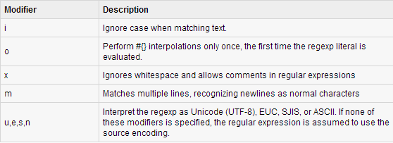
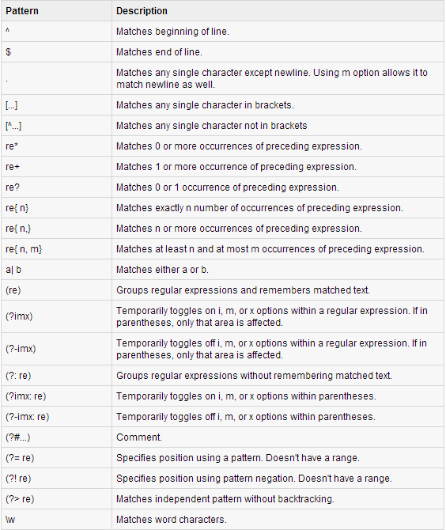

This week I decided to teach you about a topic of which I had no prior knowledge but it's been bugging me ever since I started learning programming. The concept of regular expressions, also known as Regex or Regexp, is not overly complicated but there are a lot of things to be memorized here, so I will do my best to lay it all out to you in a simple language. Since at DBC we seem to place more focus on Ruby, in particular, I'm going to talk about how regular expressions work in Ruby.
In order to be able to properly implement regular expressions in Ruby, we have to understand what regular expressions actually are. A regular expression is a special sequence of characters that helps you match or find other strings or sets of strings in a specialized syntax held in a pattern. In other words, it is used to match a search pattern against strings. Right now I am typing this text in Sublime and if I were to open up "Find" and "Replace" tabs and type something in, the program would most likely interpret my input as a regular expression in order to perform those tasks. That's a common example to demonstrate how regular expressions are used.
Regular expressions are obviously not unique to Ruby and are used in many different programming languages, including JavaScript, PHP, etc. The great thing about regular expressions syntax is that it's very similar across all these different languages, so once you master Ruby regexp syntax, you'll find it very easy to implement your knowledge while working with JavaScript, for example. As you would guess, regular expressions, like everything else in Ruby, are objects. They belong to Regexp class. Regexps could be created using the Regexp::new constructor, however, it's much easier to use the literals /.../ or %r{...} .
So, why use regular expressions in the first place? Well, regular expressions provide you with a certain range of functionality, but probably, most common and simplest way to use a regexp is to apply it to a string and see if there's a match. For this purpose we could use the #match method, which by the way, works on both regular expressions and strings. Here's how it would look:
"(123) 456-7890".match(/\(\d{3}\) \d{3}-\d{4}/)
In the example above we're looking for a specific pattern: 3 digits inside the parentheses, a space, another 3 digits, a dash and 4 digits. Since this pattern exactly matches the string that we are passing the #match method on, we're going to get back a MatchData instance. It can then be accessed like this:
match1.string # => "(123) 456-7890"
If we didn't get a match, then nil would be returned.
However, there is also another method that could be used to match regexp with strings. It is the "equals-tilde" operator (which is also a method), or simply, =~. It behaves identically to the #match method if there's no match by returning nil. But if there is a match, instead of storing the entire matched string, it only returns the numerical position of the string where the match started. For example:
"Ruby For Newbies: Regular Expressions" =~ /New/ # => 9
It should also be noted that with =~, the order of String and Regexp doesn't matter, meaning that this:
/hay/ =~ 'haystack'
would be the same as this:
'haystack' =~ /hay/
You can add an optional modifier to the regular expression literals in order to control various aspects of matching. The modifier is specified after the second slash character. Here is a list of modifiers and what they do: 
All characters match themselves within a regexp except the so-called control characters: (+ ? . * ^ $ ( ) [ ] { } | \). The control characters could be escaped or, simply put, interpreted as themselves by preceding them with a backslash. Here is a useful, although incomplete list of regular expression syntax for Ruby: 
Finally, I want to point out another couple of really important methods that make use of regexp. These are #sub and #gsub as well as their destructive variants, #sub! and #gsub!. They all perform a search-and-replace operation, the only difference being that #sub and #sub! replace only the first occurence of the pattern, while #gsub and #gsub! replace all occurences. Here is an example of how it could be used:
"hello".sub(/[aeiou]/, '*') #=> "h*llo"
Of course, this post won't teach you everything you want to know about regular expressions, but hopefully, you are now equipped with the basic knowledge of what regexp is and how to use it so that you can further your knowledge later. The best advice I can give you in case you would like to really solidify your regexp knowledge is to memorize all of the symbols and then experiment, experiment and experiment some more! At some point you'll notice that it doesn't require any more effort on your part to implement regular expressions and that's when you know that you've got it. So, to sum it all up - practice regular expressions regularly :)!